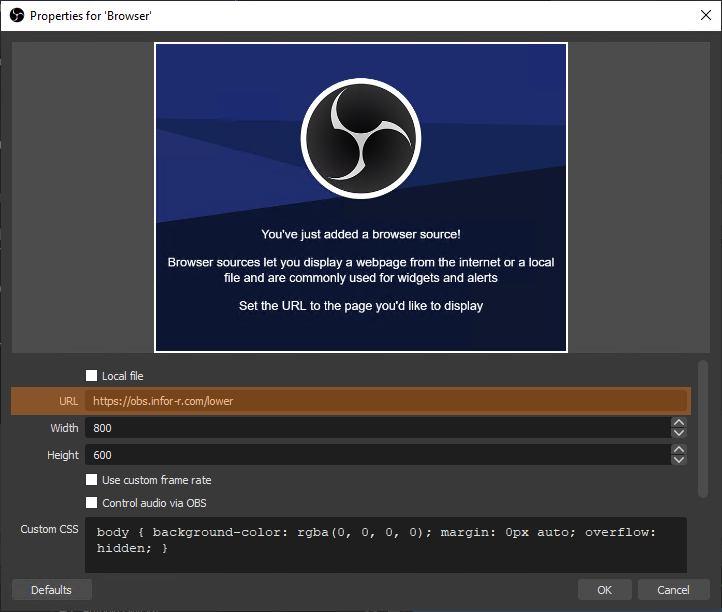
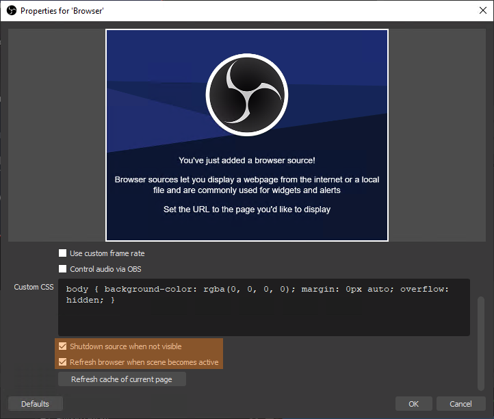
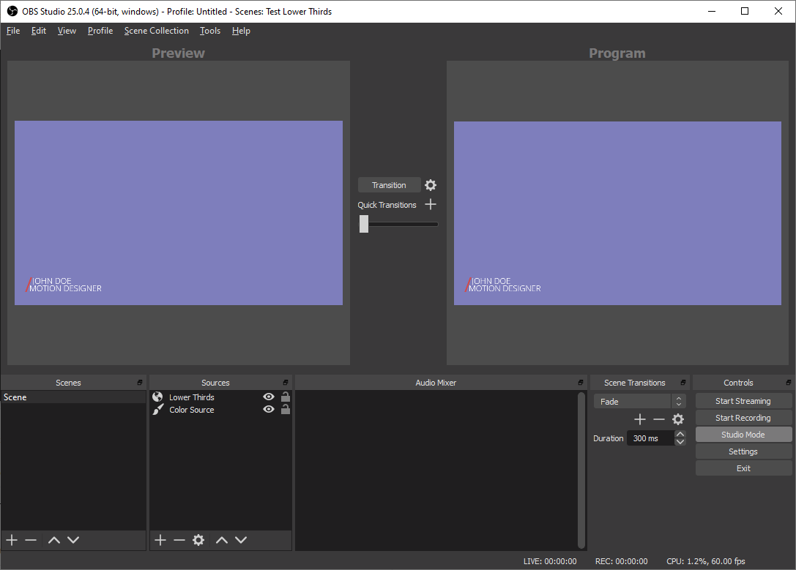

Options
- arrow_forward_ios Type 1
- arrow_forward_ios Type 2
- arrow_forward_ios Type 3
- arrow_forward_ios Type 4
- arrow_forward_ios Type 5
Use
- Open OBS Studio
- Add new source of type Browser
- URL
- Use Customize to generate the URL
- Click in preview
- Click on generated URL to copy to clipboard
- Select "Shutdown source when not visible"
 - Select "Refresh browser when scene becomes active"
- Example:

Customize
keyboard_arrow_down
URL
https://obs.infor-r.com/lower
click to copy